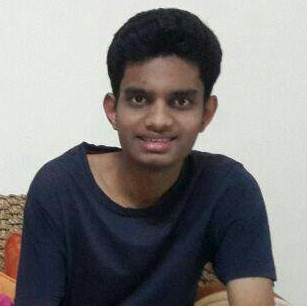

suryateja b.v.
JUNIOR UNDERGRADUATE | IIT KANPUR
JUNIOR UNDERGRADUATE | IIT KANPUR


 (+91)-7318015935
(+91)-7318015935  teja.surya59@gmail.com
teja.surya59@gmail.com  C-128, Hall-2, IIT Kanpur
C-128, Hall-2, IIT Kanpur
I am a third-year undergraduate at IIT Kanpur, India, majoring in Electrical Engineering and Computer Science. My current academic interests are in Statistics, Machine Learning, and Social Networks.
I spend a lot of time watching and reading about cricket and football. I am an ardent Real Madrid fan. Infact the color scheme of this page is based on Madrid's jersey this year.
A few blogs that I follow - here
Ongoing Courses: Algorithms II, Introduction to Machine Learning, Sociology of New Media, Digital Electronics, Principles of Communication,
Due to frequent transfers on part of my father's job, I studied in 6 different schools spread over 12 years. I'll update this page with my experiences in each of these amazing places some day..
1. Sri Chaitanya Junior College, DD Colony, Hyderabad
2. Vidyaniketan Public School, Ullal, Bengaluru
3. Baden Powell Public School, Mysore
4. NSM Public School, Vijayawada
5. SBOA Public School, Kochi
6. Bharati Vidya Bhavan High School, Hyderabad
Past Projects :
1. Stock Market Prediction : I participated in a Machine Learning Hackathon by Credit Suisse held in Jio Park, Mumbai, along with 2 of my friends Tushar Goswamy and Vatsalya Tandon. We were asked to predict the top 50 performing stocks of the next day using NSE stock market data. Since data was not provided, we had to write our own parser to collect data from Yahoo Finance. Despite receiving an accuracy of only 55% using LSTM model, we secured third-place for our excellent feature engineering. Link
2. Exoplanet Detection using Kepler Light Curve Data : This was a problem in the Inter IIT Tech Meet 2017 conducted in IIT Madras. I worked on this problem in the Winter Break of 2017. It involved classification of light curves into two classes: containing exoplanets, and not containing exoplanets. This is an open ended research problem and the best result obtained so far can be found here. Check out this tutorial to understand the problem better.
3. SongTrain : I made a web app along with 2 of my friends Lakshay Bandlish and Raghav Aggarwal for a competition called code.fun.do by Microsoft. Initially I worked in developing the webpages and designed the flow of the web app using Django. Later on I developed the database, wrote code for generating real time frequency graphs using RickshawJS and other back-end aspects like queuing and hashing of songs. We were adjudged the winners of National Finals of code.fun.do Showcase held in Microsoft Hyderabad. Check out the demo video here.